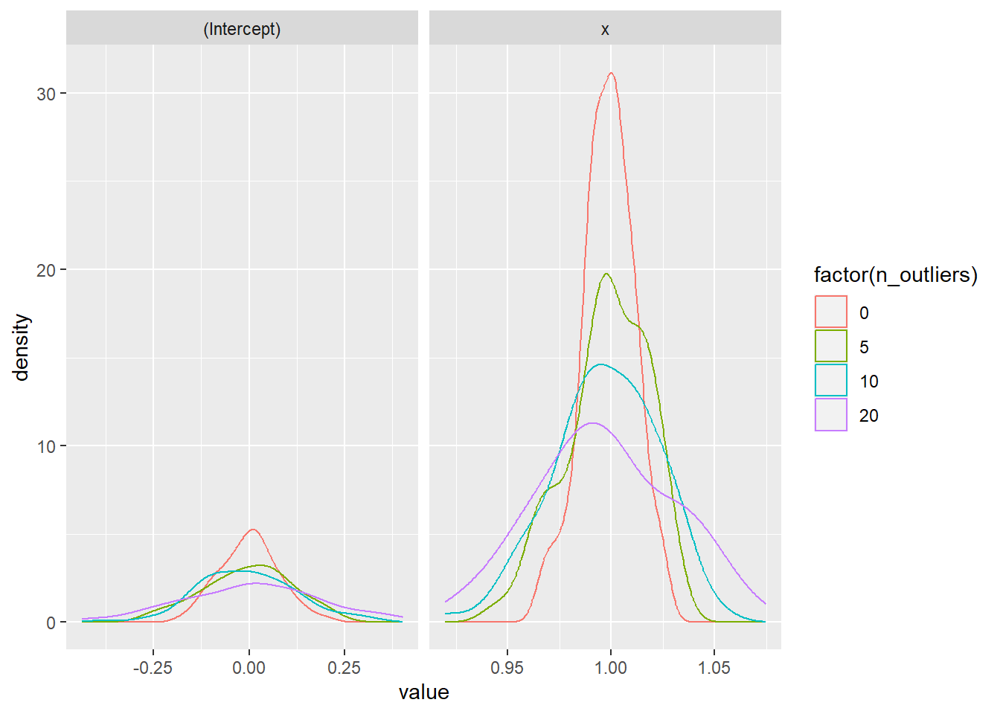

8 Functional Programming
Reading: 18 minute(s) at 200 WPM
Videos: 29 minute(s)
Objectives
- Use functional programming techniques to create code which is well organized and easier to understand and maintain
Check-ins
There is one check-in for this week:
8.1 Introduction to Iteration
We just learned the rule of “don’t repeat yourself more than two times” and to instead automate our procedures with functions in order to remove duplication of code. We have used tools such as across() to help eliminate this copy-paste procedure even further. This is a form of iteration in programming as across() “iterates” over variables, applying a function to manipulate each variable and then doing the same for the next variable.
while() and for() loops are a common form of iteration that can be extremely useful when logically thinking through a problem, however are extremely computationally intensive. Therefore, loops will not be the focus of this chapter. If you are interested, you can go read about loops in the pre-reading material of this text.
Read more
You can read all about iteration in the previous version of R4DS.
8.2 Review of Lists and Vectors
In the pre-reading, we introduce the different data structures we have worked with in R. We are going to do a review of some of the important data structures for this chapter.
A vector is a 1-dimensional data structure that contains items of the same simple (‘atomic’) type (character, logical, integer, factor).
(logical_vec <- c(T, F, T, T))[1] TRUE FALSE TRUE TRUE(numeric_vec <- c(3, 1, 4, 5))[1] 3 1 4 5(char_vec <- c("A", "AB", "ABC", "ABCD"))[1] "A" "AB" "ABC" "ABCD"You index a vector using brackets: to get the \(i\)th element of the vector x, you would use x[i] in R or x[i-1] in python (Remember, python is 0-indexed, so the first element of the vector is at location 0).
logical_vec[3][1] TRUEnumeric_vec[3][1] 4char_vec[3][1] "ABC"You can also index a vector using a logical vector:
numeric_vec[logical_vec][1] 3 4 5char_vec[logical_vec][1] "A" "ABC" "ABCD"logical_vec[logical_vec][1] TRUE TRUE TRUEA list is a 1-dimensional data structure that has no restrictions on what type of content is stored within it. A list is a “vector”, but it is not an atomic vector - that is, it does not necessarily contain things that are all the same type.
(
mylist <- list(
logical_vec,
numeric_vec,
third_thing = char_vec[1:2]
)
)[[1]]
[1] TRUE FALSE TRUE TRUE
[[2]]
[1] 3 1 4 5
$third_thing
[1] "A" "AB"List components may have names (or not), be homogeneous (or not), have the same length (or not).
8.2.1 Indexing
Indexing necessarily differs between R and python, and since the list types are also somewhat different (e.g. lists cannot be named in python), we will treat list indexing in the two languages separately.

pepper
pepper[1], the return value is always a list containing the selected element(s).
pepper[[1]], the return value is the selected element.
pepper[[1]][[1]].There are 3 ways to index a list:
- With single square brackets, just like we index atomic vectors. In this case, the return value is always a list.
mylist[1][[1]]
[1] TRUE FALSE TRUE TRUEmylist[2][[1]]
[1] 3 1 4 5mylist[c(T, F, T)][[1]]
[1] TRUE FALSE TRUE TRUE
$third_thing
[1] "A" "AB"- With double square brackets. In this case, the return value is the thing inside the specified position in the list, but you also can only get one entry in the main list at a time. You can also get things by name.
mylist[[1]][1] TRUE FALSE TRUE TRUEmylist[["third_thing"]][1] "A" "AB"- Using
x$name. This is equivalent to usingx[["name"]]. Note that this does not work on unnamed entries in the list.
mylist$third_thing[1] "A" "AB"To access the contents of a list object, we have to use double-indexing:
mylist[["third_thing"]][[1]][1] "A"You can get a more thorough review of vectors and lists from Jenny Bryan’s purrr tutorial introduction (Bryan n.d.).
8.3 Vectorized Operations
Operations in R are (usually) vectorized - that is, by default, they operate on vectors. This is primarily a feature that applies to atomic vectors (and we don’t even think about it):
[1] 2.5148897 3.5470835 2.2540411 2.2700591 2.0819251 3.4267637 0.4890702
[8] 2.8626622 5.2006616 3.1578650With vectorized functions, we don’t have to use a for loop to add these two vectors with 10 entries each together. In languages which don’t have implicit support for vectorized computations, this might instead look like:
a <- rnorm(10)
b <- rnorm(10, mean = 3)
result <- rep(0, 10)
for (i in 1:10) {
result[i] <- a[i] + b[i]
}
result [1] 5.4630173 2.1243349 5.1283864 2.3183721 5.7978345 -0.2027371
[7] 1.2356550 2.7103389 3.3019178 3.1934195That is, we would apply or map the + function to each entry of a and b. For atomic vectors, it’s easy to do this by default; with a list, however, we need to be a bit more explicit (because everything that’s passed into the function may not be the same type).
I find the purrr package easier to work with, so we won’t be working with the base functions in this course. You can find a side-by-side comparison in the purrr tutorial.
You can also watch Dr. Theobold’s video to learn more:
The R package purrr (and similar base functions apply, lapply, sapply, tapply, and mapply) are based on extending “vectorized” functions to a wider variety of vector-like structures.
8.4 Functional Programming
The concept of functional programming is a bit hard to define rigorously at the level we’re working at, but generally, functional programming is concerned with pure functions: functions that have an input value that determines the output value and create no other side effects.
What this means is that you describe every step of the computation using a function, and chain the functions together. At the end of the computations, you might save the program’s results to an object, but (in general), the goal is to not change things outside of the “pipeline” along the way.
This has some advantages:
- Easier parallelization
- “Side effects” generally make it hard to parallelize code because e.g. you have to update stored objects in memory, which is hard to do with multiple threads accessing the same memory.
- Functional programming tends to be easier to read
- You can see output and input and don’t have to work as hard to keep track of what is stored where .
- Easier Debugging
- You can examine the input and output at each stage to isolate which function is introducing the problem.
The introduction of the pipe in R has made chaining functions together in a functional programming-style pipeline much easier. purrr is just another step in this process: by making it easy to apply functions to lists of things (or to use multiple lists of things in a single function), purrr makes it easier to write clean, understandable, debuggable code.
Functional Programming Example
This example is modified from the motivation section of the Functional Programming chapter in Advanced R (Wickham 2019).
Suppose we want to replace every -99 in the following sample dataset with an NA. (-99 is sometimes used to indicate missingness in datasets).
The “beginner” approach is to just replace each individual -99 with an NA:
df1 <- df
df1[6,2] <- NA
df1[1,3] <- NA
df1[5,4] <- NA
df1 a b c d e f
1 7 5 NA 2 5 2
2 5 5 5 3 6 1
3 6 8 5 9 9 4
4 4 2 2 6 6 8
5 6 7 6 NA 10 6
6 9 NA 4 7 5 1This is tedious, and painful, and won’t work if we have a slightly different dataset where the -99s are in different places. So instead, we might consider being a bit more general:
df2 <- df
df2$a[df2$a == -99] <- NA
df2$b[df2$b == -99] <- NA
df2$c[df2$c == -99] <- NA
df2$d[df2$d == -99] <- NA
df2$e[df2$e == -99] <- NA
df2$f[df2$f == -99] <- NA
df2 a b c d e f
1 7 5 NA 2 5 2
2 5 5 5 3 6 1
3 6 8 5 9 9 4
4 4 2 2 6 6 8
5 6 7 6 NA 10 6
6 9 NA 4 7 5 1This requires a few more lines of code, but is able to handle any data frame with 6 columns a - f. It also requires a lot of copy-paste and can leave you vulnerable to making mistakes.
The standard rule is that if you copy-paste the same code 3x, then you should write a function, so let’s try that instead:
fix_missing <- function(x, missing = -99){
x[x == missing] <- NA
x
}
df3 <- df
df3$a <- fix_missing(df$a)
df3$b <- fix_missing(df$b)
df3$c <- fix_missing(df$c)
df3$d <- fix_missing(df$d)
df3$e <- fix_missing(df$e)
df3$f <- fix_missing(df$f)
df3 a b c d e f
1 7 5 NA 2 5 2
2 5 5 5 3 6 1
3 6 8 5 9 9 4
4 4 2 2 6 6 8
5 6 7 6 NA 10 6
6 9 NA 4 7 5 1This still requires a lot of copy-paste, and doesn’t actually make the code more readable. We can more easily change the missing value, though, which is a bonus.
We have a function that we want to apply or map to every column in our data frame. We could use a for() loop (doing this for demonstrative purposes only, I expect you to use more efficient tools in class):
fix_missing <- function(x, missing = -99){
x[x == missing] <- NA
x
}
df4 <- df
for (i in 1:ncol(df)) {
df4[,i] <- fix_missing(df4[,i])
}
df4 a b c d e f
1 7 5 NA 2 5 2
2 5 5 5 3 6 1
3 6 8 5 9 9 4
4 4 2 2 6 6 8
5 6 7 6 NA 10 6
6 9 NA 4 7 5 1This is more understandable and flexible than the previous function approach as well as the naive approach - we don’t need to know the names of the columns in our data frame, or even how many there are. It is still quite a few lines of code, though.
Iterating through a list (or columns of a data frame) is a very common task, so R has a shorthand function for it. You could us lapply from base R, but we will be learning the map family of functions from the purrr package.
fix_missing <- function(x, missing = -99){
x[x == missing] <- NA
x
}
df5 <- df
df5 <- map_dfc(df5, fix_missing)
df5# A tibble: 6 × 6
a b c d e f
<dbl> <dbl> <dbl> <dbl> <dbl> <dbl>
1 7 5 NA 2 5 2
2 5 5 5 3 6 1
3 6 8 5 9 9 4
4 4 2 2 6 6 8
5 6 7 6 NA 10 6
6 9 NA 4 7 5 1By default, map returns a list (see below), but we can use map_dfc to return a data frame created by binding the columns together.
map() - returns a list
df6 <- df
map(df6, fix_missing)$a
[1] 7 5 6 4 6 9
$b
[1] 5 5 8 2 7 NA
$c
[1] NA 5 5 2 6 4
$d
[1] 2 3 9 6 NA 7
$e
[1] 5 6 9 6 10 5
$f
[1] 2 1 4 8 6 1We’ve replaced 6 lines of code that only worked for 6 columns named a - f with a single line of code that works for any data frame with any number of rows and columns, so long as -99 indicates missing data. In addition to being shorter, this code is also somewhat easier to read and much less vulnerable to typos.
8.5 Introduction to map()
purrr is a part of the tidyverse, so you should already have the package installed. When you load the tidyverse with library(), this also loads purrr.
install.packages("purrr")
library(purrr)8.5.1 Data Setup
We’ll use one of the datasets in the repurrsive package, got_chars, to start playing with the map_ series of functions. First, let’s export the data from repurrrsive to a JSON file that we can read into R.
The source data for this example comes from An API of Ice and Fire and is fairly typical for API (automatic programming interface) data in both cleanliness and complexity.
length(got_chars)[1] 30got_chars[[1]][1:6] # Only show the first 6 fields$url
[1] "https://www.anapioficeandfire.com/api/characters/1022"
$id
[1] 1022
$name
[1] "Theon Greyjoy"
$gender
[1] "Male"
$culture
[1] "Ironborn"
$born
[1] "In 278 AC or 279 AC, at Pyke"names(got_chars[[1]]) # How many total fields? names? [1] "url" "id" "name" "gender" "culture"
[6] "born" "died" "alive" "titles" "aliases"
[11] "father" "mother" "spouse" "allegiances" "books"
[16] "povBooks" "tvSeries" "playedBy" It appears that each entry in this 30-item list is a character from Game of Thrones, and there are several sub-fields for each character.
8.5.2 Exploring the Data
What characters do we have? How is the data structured?
List data can be incredibly hard to work with because the structure is so flexible. It’s important to have a way to visualize the structure of a complex list object: the View() command in RStudio is one good way to explore and poke around a list.
We can use purrr::map(x, "name") to get a list of all characters’ names. Since they are all the same type, we could also use an extension of map(), map_chr(), which will coerce the returned list into a character vector (which may be simpler to operate on).
There are several packages with map() functions including functions that are meant to actually plot maps; it generally saves time and effort to just type the function name with the package you want in package::function notation. You don’t have to do so, but if you have a lot of other (non tidyverse, in particular) packages loaded, it will save you a lot of grief.
purrr::map(got_chars, "name")[1:5][[1]]
[1] "Theon Greyjoy"
[[2]]
[1] "Tyrion Lannister"
[[3]]
[1] "Victarion Greyjoy"
[[4]]
[1] "Will"
[[5]]
[1] "Areo Hotah"purrr::map_chr(got_chars, "name")[1:5][1] "Theon Greyjoy" "Tyrion Lannister" "Victarion Greyjoy"
[4] "Will" "Areo Hotah" Similar shortcuts work to get the nth item in each sub list:
purrr::map_chr(got_chars, 4) [1] "Male" "Male" "Male" "Male" "Male" "Male" "Male" "Female"
[9] "Female" "Male" "Female" "Male" "Female" "Male" "Male" "Male"
[17] "Female" "Female" "Female" "Male" "Male" "Male" "Male" "Male"
[25] "Male" "Female" "Male" "Male" "Male" "Female"Specifying the output type using e.g. map_chr() works if each item in the list is an atomic vector of length 1. If the list is more complicated, though, these shortcuts will issue an error:
purrr::map(got_chars, "books")[1:5][[1]]
[1] "A Game of Thrones" "A Storm of Swords" "A Feast for Crows"
[[2]]
[1] "A Feast for Crows" "The World of Ice and Fire"
[[3]]
[1] "A Game of Thrones" "A Clash of Kings" "A Storm of Swords"
[[4]]
[1] "A Clash of Kings"
[[5]]
[1] "A Game of Thrones" "A Clash of Kings" "A Storm of Swords"purrr::map_chr(got_chars, "books")[1:5]Error in `purrr::map_chr()`:
ℹ In index: 1.
Caused by error:
! Result must be length 1, not 3.What if we want to extract several things? This trick works off of the idea that [ is a function: that is, the single brackets we used before are actually a special type of function. In R functions, there is often the argument ..., which is a convention that allows us to pass arguments to other functions that are called within the main function we are using (you’ll see … used in plotting and regression functions frequently as well).
Here, we use ... to pass in our list of 3 things we want to pull from each item in the list.
[[1]]
[[1]]$name
[1] "Theon Greyjoy"
[[1]]$gender
[1] "Male"
[[1]]$born
[1] "In 278 AC or 279 AC, at Pyke"
[[2]]
[[2]]$name
[1] "Tyrion Lannister"
[[2]]$gender
[1] "Male"
[[2]]$born
[1] "In 273 AC, at Casterly Rock"
[[3]]
[[3]]$name
[1] "Victarion Greyjoy"
[[3]]$gender
[1] "Male"
[[3]]$born
[1] "In 268 AC or before, at Pyke"
[[4]]
[[4]]$name
[1] "Will"
[[4]]$gender
[1] "Male"
[[4]]$born
[1] ""
[[5]]
[[5]]$name
[1] "Areo Hotah"
[[5]]$gender
[1] "Male"
[[5]]$born
[1] "In 257 AC or before, at Norvos"What if we want this to be a data frame instead? We can use map_dfr() to get a data frame that is formed by row-binding each element in the list.
# A tibble: 30 × 3
name gender born
<chr> <chr> <chr>
1 Theon Greyjoy Male "In 278 AC or 279 AC, at Pyke"
2 Tyrion Lannister Male "In 273 AC, at Casterly Rock"
3 Victarion Greyjoy Male "In 268 AC or before, at Pyke"
4 Will Male ""
5 Areo Hotah Male "In 257 AC or before, at Norvos"
6 Chett Male "At Hag's Mire"
7 Cressen Male "In 219 AC or 220 AC"
8 Arianne Martell Female "In 276 AC, at Sunspear"
9 Daenerys Targaryen Female "In 284 AC, at Dragonstone"
10 Davos Seaworth Male "In 260 AC or before, at King's Landing"
# … with 20 more rows# A tibble: 30 × 3
name gender born
<chr> <chr> <chr>
1 Theon Greyjoy Male "In 278 AC or 279 AC, at Pyke"
2 Tyrion Lannister Male "In 273 AC, at Casterly Rock"
3 Victarion Greyjoy Male "In 268 AC or before, at Pyke"
4 Will Male ""
5 Areo Hotah Male "In 257 AC or before, at Norvos"
6 Chett Male "At Hag's Mire"
7 Cressen Male "In 219 AC or 220 AC"
8 Arianne Martell Female "In 276 AC, at Sunspear"
9 Daenerys Targaryen Female "In 284 AC, at Dragonstone"
10 Davos Seaworth Male "In 260 AC or before, at King's Landing"
# … with 20 more rowsIf we want to more generally convert the entire data set to a data frame, we can use a couple of handy functions to do that:
-
purrr::transposetransposes a list, so that x[[1]][[2]] becomes x[[2]][[1]]. This turns the list into a set of columns. -
tibble::as_tibbleturns an object into a tibble. This creates a rectangular, data frame like structure -
purrr::unnesttakes columns and “ungroups” them, so that each entry in the sub-lists of the column gets a row in the data frame. Here, I’ve used this to unwrap lists that are all single items so that we can see some of the data.
| url | id | name | gender | culture | born | died | alive | titles | aliases | father | mother | spouse | allegiances | books | povBooks | tvSeries | playedBy |
|---|---|---|---|---|---|---|---|---|---|---|---|---|---|---|---|---|---|
| https://www.anapioficeandfire.com/api/characters/1022 | 1022 | Theon Greyjoy | Male | Ironborn | In 278 AC or 279 AC, at Pyke | TRUE | Prince of Winterfell , Lord of the Iron Islands (by law of the green lands) | Prince of Fools, Theon Turncloak, Reek , Theon Kinslayer | House Greyjoy of Pyke | A Game of Thrones, A Storm of Swords, A Feast for Crows | A Clash of Kings , A Dance with Dragons | Season 1, Season 2, Season 3, Season 4, Season 5, Season 6 | Alfie Allen | ||||
| https://www.anapioficeandfire.com/api/characters/1052 | 1052 | Tyrion Lannister | Male | In 273 AC, at Casterly Rock | TRUE | Acting Hand of the King (former), Master of Coin (former) | The Imp , Halfman , The boyman , Giant of Lannister, Lord Tywin's Doom , Lord Tywin's Bane , Yollo , Hugor Hill , No-Nose , Freak , Dwarf | https://www.anapioficeandfire.com/api/characters/2044 | House Lannister of Casterly Rock | A Feast for Crows , The World of Ice and Fire | A Game of Thrones , A Clash of Kings , A Storm of Swords , A Dance with Dragons | Season 1, Season 2, Season 3, Season 4, Season 5, Season 6 | Peter Dinklage | ||||
| https://www.anapioficeandfire.com/api/characters/1074 | 1074 | Victarion Greyjoy | Male | Ironborn | In 268 AC or before, at Pyke | TRUE | Lord Captain of the Iron Fleet, Master of the Iron Victory | The Iron Captain | House Greyjoy of Pyke | A Game of Thrones, A Clash of Kings , A Storm of Swords | A Feast for Crows , A Dance with Dragons | ||||||
| https://www.anapioficeandfire.com/api/characters/1109 | 1109 | Will | Male | In 297 AC, at Haunted Forest | FALSE | NULL | A Clash of Kings | A Game of Thrones | Bronson Webb | ||||||||
| https://www.anapioficeandfire.com/api/characters/1166 | 1166 | Areo Hotah | Male | Norvoshi | In 257 AC or before, at Norvos | TRUE | Captain of the Guard at Sunspear | House Nymeros Martell of Sunspear | A Game of Thrones, A Clash of Kings , A Storm of Swords | A Feast for Crows , A Dance with Dragons | Season 5, Season 6 | DeObia Oparei | |||||
| https://www.anapioficeandfire.com/api/characters/1267 | 1267 | Chett | Male | At Hag's Mire | In 299 AC, at Fist of the First Men | FALSE | NULL | A Game of Thrones, A Clash of Kings | A Storm of Swords |
8.5.3 Map inside Mutate
A very powerful way to work with data is to use a map function inside of a mutate statement: to simplify data and create a new column all in one go. Let’s use this to create a more human-readable (though somewhat less “clean”) data frame:
- function to simplify a character list-column,
- replace any 0-length/NULL entries with an empty string
- paste all of the entries together, separated by “,”
- ensure that the resulting list is coerced to a character vector
- Then, we can apply the above function to each list column in our data frame.
8.5.4 Creating (and Using) List-columns
Data structures in R are typically list-based in one way or another. Sometimes, more complicated data structures are actually lists of lists, or tibbles with a list-column, or other variations on “list within a ____”. In combination with purrr, this is an incredibly powerful setup that can make working with simulations and data very easy.
Example: Benefits of List columns
Suppose, for instance, I want to simulate some data for modeling purposes, where I can control the number of outliers in the dataset:
data_sim <- function(n_outliers = 0) {
tmp <- tibble(x = seq(-10, 10, .1),
y = rnorm(length(x), mean = x, sd = 1)
)
outlier_sample <- c(NULL, sample(tmp$x, n_outliers))
# Create outliers
tmp |>
mutate(
is_outlier = x %in% outlier_sample,
y = y + is_outlier * sample(c(-1, 1), n(), replace = T) * runif(n(), 5, 10)
)
}
data_sim()# A tibble: 201 × 3
x y is_outlier
<dbl> <dbl> <lgl>
1 -10 -10.8 FALSE
2 -9.9 -11.4 FALSE
3 -9.8 -8.86 FALSE
4 -9.7 -9.52 FALSE
5 -9.6 -9.36 FALSE
6 -9.5 -7.88 FALSE
7 -9.4 -9.29 FALSE
8 -9.3 -9.43 FALSE
9 -9.2 -11.1 FALSE
10 -9.1 -9.38 FALSE
# … with 191 more rowsNow, lets suppose that I want 100 replicates of each of 0, 5, 10, and 20 outliers.
I could use unnest(sim_data) if I wanted to expand my data a bit to see what I have, but in this case, it’s more useful to leave it in its current, compact form. Instead, suppose I fit a linear regression to each of the simulated data sets, and store the fitted linear regression object in a new list-column?
Here, we use an anonymous function in purrr: by using ~{expression}, we have defined a function that takes the argument . (which is just a placeholder). So in our case, we’re saying “use the data that I pass in to fit a linear regression of y using x as a predictor”.
Let’s play around a bit with this: We might want to look at our regression coefficients or standard errors to see how much the additional outliers affect us. We could use a fancy package for tidy modeling, such as broom, but for now, lets do something a bit simpler and apply the purrr name extraction functions we used earlier.
It can be helpful to examine one of the objects just to see what you’re dealing with:
str(sim$reg[[1]])List of 12
$ coefficients : Named num [1:2] -0.117 1.001
..- attr(*, "names")= chr [1:2] "(Intercept)" "x"
$ residuals : Named num [1:201] 0.584 -0.721 0.696 1.282 -0.627 ...
..- attr(*, "names")= chr [1:201] "1" "2" "3" "4" ...
$ effects : Named num [1:201] 1.662 82.367 0.733 1.318 -0.591 ...
..- attr(*, "names")= chr [1:201] "(Intercept)" "x" "" "" ...
$ rank : int 2
$ fitted.values: Named num [1:201] -10.13 -10.03 -9.93 -9.83 -9.73 ...
..- attr(*, "names")= chr [1:201] "1" "2" "3" "4" ...
$ assign : int [1:2] 0 1
$ qr :List of 5
..$ qr : num [1:201, 1:2] -14.1774 0.0705 0.0705 0.0705 0.0705 ...
.. ..- attr(*, "dimnames")=List of 2
.. .. ..$ : chr [1:201] "1" "2" "3" "4" ...
.. .. ..$ : chr [1:2] "(Intercept)" "x"
.. ..- attr(*, "assign")= int [1:2] 0 1
..$ qraux: num [1:2] 1.07 1.11
..$ pivot: int [1:2] 1 2
..$ tol : num 1e-07
..$ rank : int 2
..- attr(*, "class")= chr "qr"
$ df.residual : int 199
$ xlevels : Named list()
$ call : language lm(formula = y ~ x, data = .)
$ terms :Classes 'terms', 'formula' language y ~ x
.. ..- attr(*, "variables")= language list(y, x)
.. ..- attr(*, "factors")= int [1:2, 1] 0 1
.. .. ..- attr(*, "dimnames")=List of 2
.. .. .. ..$ : chr [1:2] "y" "x"
.. .. .. ..$ : chr "x"
.. ..- attr(*, "term.labels")= chr "x"
.. ..- attr(*, "order")= int 1
.. ..- attr(*, "intercept")= int 1
.. ..- attr(*, "response")= int 1
.. ..- attr(*, ".Environment")=<environment: 0x0000021d6368a1b0>
.. ..- attr(*, "predvars")= language list(y, x)
.. ..- attr(*, "dataClasses")= Named chr [1:2] "numeric" "numeric"
.. .. ..- attr(*, "names")= chr [1:2] "y" "x"
$ model :'data.frame': 201 obs. of 2 variables:
..$ y: num [1:201] -9.55 -10.75 -9.23 -8.55 -10.36 ...
..$ x: num [1:201] -10 -9.9 -9.8 -9.7 -9.6 -9.5 -9.4 -9.3 -9.2 -9.1 ...
..- attr(*, "terms")=Classes 'terms', 'formula' language y ~ x
.. .. ..- attr(*, "variables")= language list(y, x)
.. .. ..- attr(*, "factors")= int [1:2, 1] 0 1
.. .. .. ..- attr(*, "dimnames")=List of 2
.. .. .. .. ..$ : chr [1:2] "y" "x"
.. .. .. .. ..$ : chr "x"
.. .. ..- attr(*, "term.labels")= chr "x"
.. .. ..- attr(*, "order")= int 1
.. .. ..- attr(*, "intercept")= int 1
.. .. ..- attr(*, "response")= int 1
.. .. ..- attr(*, ".Environment")=<environment: 0x0000021d6368a1b0>
.. .. ..- attr(*, "predvars")= language list(y, x)
.. .. ..- attr(*, "dataClasses")= Named chr [1:2] "numeric" "numeric"
.. .. .. ..- attr(*, "names")= chr [1:2] "y" "x"
- attr(*, "class")= chr "lm"If we pull out the coefficients by name we get a vector of length two. So before we unnest, we need to change that so that R formats it as a row of a data frame.
sim$reg[[1]]$coefficients |>
as_tibble_row()# A tibble: 1 × 2
`(Intercept)` x
<dbl> <dbl>
1 -0.117 1.00This will make our formatting a lot easier and prevent any duplication that might occur if we unnest a vector that has length > 1.
sim <- sim |>
mutate(coefs = purrr::map(reg, "coefficients") |>
purrr::map(as_tibble_row))
sim$coefs[1:5][[1]]
# A tibble: 1 × 2
`(Intercept)` x
<dbl> <dbl>
1 -0.117 1.00
[[2]]
# A tibble: 1 × 2
`(Intercept)` x
<dbl> <dbl>
1 -0.105 0.977
[[3]]
# A tibble: 1 × 2
`(Intercept)` x
<dbl> <dbl>
1 -0.125 0.961
[[4]]
# A tibble: 1 × 2
`(Intercept)` x
<dbl> <dbl>
1 0.211 0.966
[[5]]
# A tibble: 1 × 2
`(Intercept)` x
<dbl> <dbl>
1 0.108 1.01Then, we can plot our results:
sim |>
unnest(coefs) |>
select(rep, n_outliers, `(Intercept)`, x) |>
pivot_longer(-c(rep, n_outliers),
names_to = "coef",
values_to = "value"
) |>
ggplot(aes(x = value,
color = factor(n_outliers))
) +
geom_density() +
facet_wrap(~coef, scales = "free_x")
So as there are more and more outliers, the coefficient estimates get a wider distribution, but remain (relatively) centered on the “true” values of 0 and 1, respectively.
Notice that we keep our data in list column form right up until it is time to actually unnest it - which means that we have at the ready the simulated data, the simulated model, and the conditions under which it was simulated, all in the same data structure. It’s a really nice, organized system.
8.5.5 Ways to use map
There are 3 main use cases for map (and its cousins pmap, map2, etc.):
- Use with an existing function
- Use with an anonymous function, defined on the fly
- Use with a formula (which is just a concise way to define an anonymous function)
I’ll use a trivial example to show the difference between these options:
# An existing function
res <- tibble(x = 1:10,
y1 = map_dbl(x, log10)
)
# An anonymous function
res <- res |>
mutate(
y2 = map_dbl(x, function(z) z^2/10)
)
# A formula equivalent to function(z) z^5/(z + 10)
# the . is the variable you're manipulating
res <- res |>
mutate(
y3 = map_dbl(x, ~.x^5/(.x+10))
)It can be a bit tricky to differentiate between options 2 and 3 in practice - the biggest difference is that you’re not using the keyword function and your variable is the default placeholder variable .x used in the tidyverse.
Example
Create a new column containing a single string of all of the books each character was in.
To do this, you’ll need to collapse the list of books for each character into a single string, which you can do with the str_flatten() function and the collapse argument. I’ve copied here for convenience. (The function won’t work out of the box, because it was designed to work on each column of a dataframe, and here we’d be applying it to each row.)
letters[1:10] |> str_flatten(collapse = "|")[1] "a|b|c|d|e|f|g|h|i|j"Start with this data frame of character names and book list-columns:
# Define a function
my_collapse <- function(x){
str_flatten(x, collapse = " | ")
}
data(got_chars)
got_df <- tibble(name = map_chr(got_chars, "name"),
id = map_int(got_chars, "id"),
books = map(got_chars, "books")
)
got_df <- got_df |>
mutate(
fun_def_res = map_chr(.x = books,
.f = my_collapse
),
# Here, I don't have to define a function, I just pass my additional
# argument in after the fact (recall ...)
fun_base_res = map_chr(.x = books,
.f = str_flatten,
collapse = " | "
),
# Here, I can just define a new function without a name and apply it to
# each entry
fun_anon_res = map_chr(.x = books,
.f = function(x) str_flatten(x, collapse = " | ")
),
# And here, I don't even bother to specifically say that I'm defining a
# function, I just apply a formula to each entry
fun_formula_res = map_chr(.x = books,
.f = ~ str_flatten(.x, collapse = " | ")
)
) | name | id | books | fun_def_res | fun_base_res | fun_anon_res | fun_formula_res |
|---|---|---|---|---|---|---|
| Theon Greyjoy | 1022 | A Game of Thrones, A Storm of Swords, A Feast for Crows | A Game of Thrones | A Storm of Swords | A Feast for Crows | A Game of Thrones | A Storm of Swords | A Feast for Crows | A Game of Thrones | A Storm of Swords | A Feast for Crows | A Game of Thrones | A Storm of Swords | A Feast for Crows |
| Tyrion Lannister | 1052 | A Feast for Crows , The World of Ice and Fire | A Feast for Crows | The World of Ice and Fire | A Feast for Crows | The World of Ice and Fire | A Feast for Crows | The World of Ice and Fire | A Feast for Crows | The World of Ice and Fire |
| Victarion Greyjoy | 1074 | A Game of Thrones, A Clash of Kings , A Storm of Swords | A Game of Thrones | A Clash of Kings | A Storm of Swords | A Game of Thrones | A Clash of Kings | A Storm of Swords | A Game of Thrones | A Clash of Kings | A Storm of Swords | A Game of Thrones | A Clash of Kings | A Storm of Swords |
| Will | 1109 | A Clash of Kings | A Clash of Kings | A Clash of Kings | A Clash of Kings | A Clash of Kings |
| Areo Hotah | 1166 | A Game of Thrones, A Clash of Kings , A Storm of Swords | A Game of Thrones | A Clash of Kings | A Storm of Swords | A Game of Thrones | A Clash of Kings | A Storm of Swords | A Game of Thrones | A Clash of Kings | A Storm of Swords | A Game of Thrones | A Clash of Kings | A Storm of Swords |
| Chett | 1267 | A Game of Thrones, A Clash of Kings | A Game of Thrones | A Clash of Kings | A Game of Thrones | A Clash of Kings | A Game of Thrones | A Clash of Kings | A Game of Thrones | A Clash of Kings |
(Optional) Beyond map: Functions with multiple inputs
Sometimes, you might need to map a function over two vectors/lists in parallel. purrr has you covered with the map2 function. As with map, the syntax is map2(thing1, thing2, function, other.args); the big difference is that function takes two arguments.
Example
Let’s create a simple times-table:
crossing(x = 1:10, y = 1:10) |>
mutate(times = map2_int(x, y, `*`)) |>
pivot_wider(names_from = y, names_prefix = 'y=', values_from = times)# A tibble: 10 × 11
x `y=1` `y=2` `y=3` `y=4` `y=5` `y=6` `y=7` `y=8` `y=9` `y=10`
<int> <int> <int> <int> <int> <int> <int> <int> <int> <int> <int>
1 1 1 2 3 4 5 6 7 8 9 10
2 2 2 4 6 8 10 12 14 16 18 20
3 3 3 6 9 12 15 18 21 24 27 30
4 4 4 8 12 16 20 24 28 32 36 40
5 5 5 10 15 20 25 30 35 40 45 50
6 6 6 12 18 24 30 36 42 48 54 60
7 7 7 14 21 28 35 42 49 56 63 70
8 8 8 16 24 32 40 48 56 64 72 80
9 9 9 18 27 36 45 54 63 72 81 90
10 10 10 20 30 40 50 60 70 80 90 100# we could use `multiply_by` instead of `*` if we wanted toIf you are using formula notation to define functions with map2, you will need to refer to your two arguments as .x and .y. You can determine this from the Usage section when you run map2, which shows you map2(.x, .y, .f, ...) - that is, the first argument is .x, the second is .y, and the third is the function.
Like map, you can specify the type of the output response using map2. This makes it very easy to format the output appropriately for your application.
You can use functions with many arguments with map by using the pmap variant; here, you pass in a list of functions, which are identified by position (..1, ..2, ..3, etc). Note the .. - you are referencing the list first, and the index within the list argument 2nd.
Example
Determine if each Game of Thrones character has more titles than aliases. Start with this code:
# A tibble: 30 × 4
name titles aliases more_titles
<chr> <list> <list> <lgl>
1 Theon Greyjoy <chr [2]> <chr [4]> FALSE
2 Tyrion Lannister <chr [2]> <chr [11]> FALSE
3 Victarion Greyjoy <chr [2]> <chr [1]> TRUE
4 Will <chr [1]> <chr [1]> FALSE
5 Areo Hotah <chr [1]> <chr [1]> FALSE
6 Chett <chr [1]> <chr [1]> FALSE
7 Cressen <chr [1]> <chr [1]> FALSE
8 Arianne Martell <chr [1]> <chr [1]> FALSE
9 Daenerys Targaryen <chr [5]> <chr [11]> FALSE
10 Davos Seaworth <chr [4]> <chr [5]> FALSE
# … with 20 more rowsTutorial
(Required) Complete the tutorial on iteration and functional programming.
Learn More About Purrr
The Joy of Functional Programming (for Data Science): Hadley Wickham’s talk on purrr and functional programming. ~1h video and slides.
(The Joy of Cooking meets Data Science, with illustrations by Allison Horst)Pirating Web Content Responsibly with R and purrr (a blog post in honor of international talk like a pirate day) (Rudis 2017)
Setting NAs with purrr (uses the
naniarpackage)Mappers with purrr - handy ways to make your code simpler if you’re reusing functions a lot.
Check-in 8.1: Functional Programming with the map() family
library(palmerpenguins)
data(penguins)1. Suppose we would like to find the median of the measurement variables (bill_length_mm, bill_depth_mm, flipper_length_mm, body_mass_g) from the penguins dataset (from the palmerpenguins package). Which of the following will produce a numeric vector of the median of every measurement variable? Select all that apply!
2. Recall that in the last unit, we discussed the challenge of standardizing many columns in a data frame. For example, If we wanted to standardize a numeric variable to be centered at the mean and scaled by the standard deviation, we could use the following function:
standardize <- function(vec) {
stopifnot(is.numeric(vec))
# Center with mean
deviations <- vec - mean(vec, na.rm = TRUE)
# Scale with standard deviation
newdata <- deviations / sd(vec, na.rm = TRUE)
return(newdata)
}Why does the following return a vector of NAs for the variable body_mass_g?
Because body_mass_g needs to be passed to standardize() as an argument
Because
mutate()operates on rows, somap_dbl()is supplyingstandardize()with one row ofbody_mass_gat a timeBecause
map_dbl()only takes one input, so you need to usemap2_dbl()insteadBecause there is no function named
standardize(), so it cannot be applied to thebody_mass_gcolumnbody_mass_gis not a data frame so it is not a valid argument formap_dbl()
3. Which of the following returns a dataframe with the standardized version of the numerical variables (bill_length_mm, bill_depth_mm, flipper_length_mm, body_mass_g) from the penguins data set?
penguins |>
map_at(bill_length_mm:body_mass_g, standardize)penguins |>
map_if(is.numeric, standardize)PA 8: The 12 Days of Christmas Starter Functions
The song “12 Days of Christmas”, written around 1780, tells the tale of many gifts a person receives in the days leading up to Christmas (link to lyrics). This week, you will be using your new R developer skills to write functions that automatically sing this very repetitive song.
In the practice activity, we will start by writing two helper functions which we will use in the lab to write a function to sing this entire song.
Visit PA 8: The 12 Days of Christmas Starter Functions for instructions.
Your Full.Phrase column is the answer to this week’s Practice Activity.
Copy and paste your Full.Phrase column to show me the phrases you made!